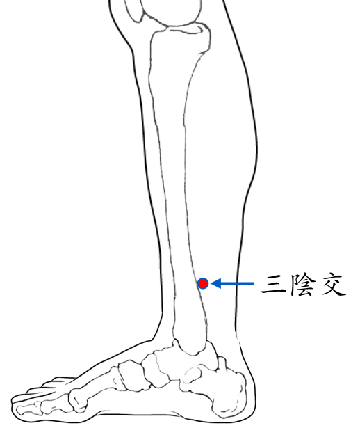

【穴位名稱】: 三陰交 (SP6)

【治療症狀】: 水腫 肚子痛 便祕 胃病胃痛 腹瀉 脫肛 痔瘡 胃、十二指腸潰瘍 腸梗阻、腸套疊 咳嗽 血尿 小便不利 小便痛 夜尿 陽萎 早洩 遺精 陰囊炎 睪丸炎 腎炎、腎孟炎 前列腺炎 尿路感染 月經不調 月經過少 月經過多 經痛 閉經 子宮下垂 赤白帶下 子宮不正 胎位不正 產後宮縮痛 不孕症 陰道癢 難產 胎衣不下 乳房疼痛 乳炎、乳癱 容易焦躁 失眠 三叉神經痛 重癥肌無力 紅斑性肢痛 膝蓋變形 小腿肚痛 肩胛痛 膏肓痛 皮膚容易化膿 皮膚粗糙 蕁麻疹 青春痘 乾癬 濕疹 皮膚潰瘍 腳癬 雞眼 酒糟鼻 丹毒 手指化膿 腳趾化膿 異位性皮膚炎 帶狀皰疹 結節性紅斑 淋巴管炎(疔瘡) 淋巴腺炎 麥粒腫(針眼) 喉嚨痛 扁桃腺炎 全身倦怠 容易疲累 輕微發燒 發燒
【取穴位置】: 小腿內側，足內踝尖上3吋，脛骨內側緣後方凹陷處。《針灸甲乙經》：「在內踝上三寸，骨下陷者中」；《醫學入門》：「骨後筋前」。
【針刺方法】: 直刺0.5～1.5吋。孕婦慎用。